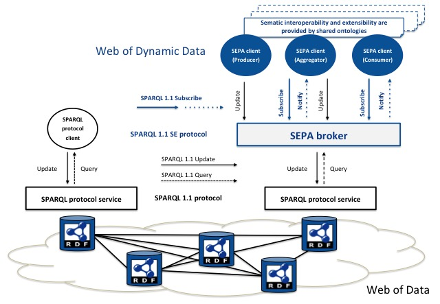
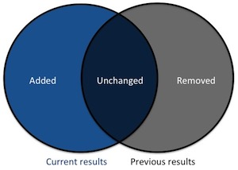

In the Web of Data, a SPARQL protocol client can update and query a SPARQL endpoint using respectively the SPARQL 1.1 Update Language [[sparql11-update]] and the SPARQL 1.1 Query Language [[sparql11-query]]. Updates and queries can be conveyed through the SPARQL 1.1 protocol [[sparql11-protocol]].
The development of applications over the Web of Data requires synchronization mechanisms that can be provided by SEPA. Thanks to the publish-subscribe mechanism implemented by a SEPA broker, clients can react to changes in the Web of Data and use such events to synchronize with other clients. The Web of Data becomes a Web of Dynamic Data. The default push based notification mechanism provided by a SEPA broker can also be complemented by a pull based one like for example the Linked Data Notifications [[ldn]] protocol.

Fig. 1 - SEPA enables the development of Dymanic Linked Data applications
Furthermore, SEPA promotes the use of the JSON SPARQL Application Profile to improve extesibility and interoperability of Dynamic Linked Data applications and services.
A SEPA broker MUST implement the SPARQL 1.1 Secure Event (SE) Protocol that is proposed as an extension of the SPARQL 1.1 Protocol [[sparql11-protocol]] to support subscribe primitives (i.e., Subscribe, Unsubscribe) and notifications (i.e., Notify). The SPARQL 1.1 SE protocol is built around a security layer (e.g.,TLS [[!RFC5246]]) and it allows client authentication by means of JSON Web Tokens [[!RFC7519]]. The SEPA broker is built on top of a SPARQL Protocol Service [[sparql11-protocol]].
The definition of the SPARQL 1.1 Secure Event (SE) Protocol and the SPARQL 1.1 Subscribe Language are out of the scope of this document.
The SEPA broker implements a content based publish-subscribe mechanism where the content of events is expressed using the SPARQL 1.1 Query Language [[sparql11-query]]. A SPARQL subscription acts as a persistent query: on every SPARQL update [[sparql11-update]], the query is evaluated and the results returned. Instead of returning all the results, the SEPA broker returns only changes in the results (i.e., added and removed bindings results). This allows saving network traffic (e.g., a relevant aspect in low rates network typical of Web of Things systems) and reducing processing cost on the client side (i.e., no need to compare previous results with the current ones to understand what is changed). Considering the previous results as the query results before the update and the current results as the query results after the update, the content of a notification includes the added and removed results as shown in the following figure:
Fig. 2 - The content of notifications: added and removed results
The publish-subscribe mechanism implemented by a SEPA broker acts as follows:
Clients can also request to unsubscribe by providing the corresponding SPUID. The format of requests and notifications are expressed according to the SPARQL 1.1 Subscribe language.
Editors would like to thanks the Advanced Research Center on Electronic Systems "Ercole De Castro" (ARCES) and the Computer Science and Engineering Department (DISI) of the University of Bologna, the European Commission and all the partners of the ARTEMIS projects who inspired the SPARQL Event Processing Architecture (SEPA).